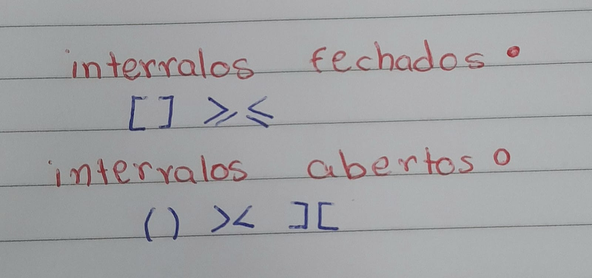
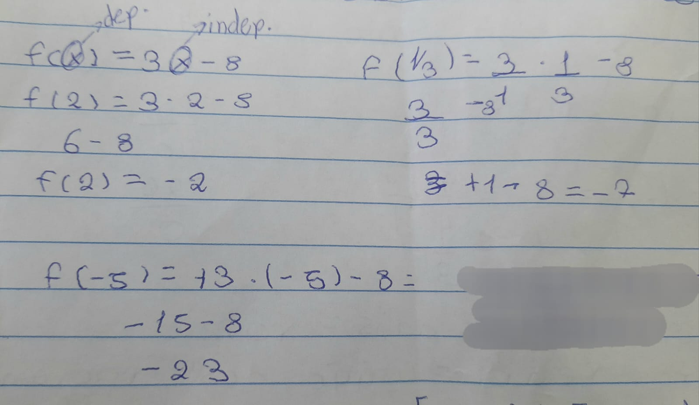

Sistemas de numeração
Sistema de numeração é um conjunto de símbolos usados para representações númericas.
- Sistema decimal (o que utilizamos), de base 10 (0, 1, 2, 3, 4, 5, 6, 7, 8 e 9)
- Sistema binário, de base 2 (0 e 1)
- Sistema octal, de base 6 (0, 1, 2, 3, 4, 5, 6 e 7)
- Sistema hexadecimal, de base 16 (0, 1, 2, 3, 4, 5, 6, 7, 8, 9, A, B, C, D, E e F)
Sistema binário
| Decimal |
Binário |
Decimal |
Binário |
| 0 |
0 |
6 |
110 |
| 1 |
1 |
7 |
111 |
| 2 |
10 |
8 |
1000 |
| 3 |
11 |
9 |
1001 |
| 4 |
100 |
10 |
1010 |
| 5 |
101 |
11 |
1011 |
Conversão de base 10 para base 2
Para converter para base 10 (decimal), para base 2 (binário) é necessário utilizar divisão,
os restos será o resultado, como no esquema
abaixo:
Conversão de base 2 para base 10
Para converter para base 2 (binário), base 10 (decimal), devemos multiplicar por potências
de 2, das quais iniciam em 0, no caso o expoente, como no esquema abaixo:
Adição e subtração
Para subtrair e somar, devemos fazer como na tabela, 1 + 1 = 11 e 11 - 1 = 10
Sistema octal
| Decimal |
Octal |
Decimal |
Octal |
| 0 |
0 |
6 |
6 |
| 1 |
1 |
7 |
7 |
| 2 |
2 |
8 |
10 |
| 3 |
3 |
9 |
11 |
| 4 |
4 |
10 |
12 |
| 5 |
5 |
11 |
13 |
Conversão de base 10 (decimal) para base 8 (octal)
Devemos fazer divisões sucessivas, como no esquema abaixo:
Conversão de base 8 (octal) para base 10 (binário)
Devemos multiplicar por potências de 8, como no esquema abaixo:
Conversão de base 2 (binário) para base 8(octal)
Devemos dividir em três algarismos ou acrescenter 0 para formar três e converter de binário para
octal, como no
esquema abaixo:
Conversão de base 8 (octal) para base 2(binário)
Devemos separar cada número e transformar um por um em binário, como no esquema abaixo:
Hexadecimal
| Decimal |
Hexadecimal |
Decimal |
Hexadecimal |
| 0 |
0 |
9 |
9 |
| 1 |
1 |
10 |
A |
| 2 |
2 |
11 |
B |
| 3 |
3 |
12 |
C |
| 4 |
4 |
13 |
D |
| 5 |
5 |
14 |
E |
| 6 |
6 |
15 |
F |
Observação: Quando todos os decimais estiverem acabados, devemos começar a utilizar as letras até acaba-las,
por exemplo:
o 43 é 2B
Conversão de base 10 (decimal) para base 16 (hexadecimal)
Devemos dividir o decimal por dezesseis, e com quaciente e resto devemos transformá-los, devemos
começar pelo
quaciente. Como no esquema abaixo:
Conversão de base 16 (hexadecimal) para base 10 (decimal)
Devemos devemos transformar primeiramente o número hexadecimal pela tabela, separadamente. Após isso
devemos
multiplicar cada potencias por dezesseis, como no esquema abaixo:
Conversão de base 2 (binário) para base 16 (hexadecimal)
Devemos dividir o decimal em quatro algarismos e transformá-los em hexadecimal
Conjuntos e conjuntos númericos
Conjuntos
Um conjunto é o que determina a qualemento ele pertencerá
Conjuntos númericos
É um conjunto de elementos agrupados de acordo com suas cracterísticas em comum.
Números naturais
É representado pelo simbolo "N" o qual tem os seguintes elementos: 0, 1, 2, 3, 4, 5, 6, 7, 8, 9,
10...
Números inteiros
É representado pelo simbolo "Z" o qual tem os seguintes elementos: ...,-3, -2,-1, 0, 1, 2, 3,...
Números racionais
É representado pelo simbolo "Q" o qual tem os seguintes elementos, números que podem ser escritos em
fração: 2,666, 0,012, 2,31444...
Números iracionais
É representado pelo simbolo "I" o qual tem os seguintes elementos: √2, −√3, √5, √2, ...
Números Reais
É representado pelo simbolo "R" o qual tem os seguintes elementos: é o conjunto racionais e
irracionais./h3>
Números complexos
É representado pelo simbolo "C" o qual tem como elementos: equações algebricas
Operações

Intervalos reais


Funções
Em uma função temos as variaveis, independente e dependente. X é a dependente e f(x) é a
independente.

Autoavaliação
Para esse trimestre devo dizer que acho que fui bem, mas com potencial para melhorar. Confesso que dormi em alguns aulas (desculpa professora), procurei tirei sempre as minhas dúvidas e fazer os exercícios que eram propostos, imprimi os materias, pois me ajud a compreender melhor.